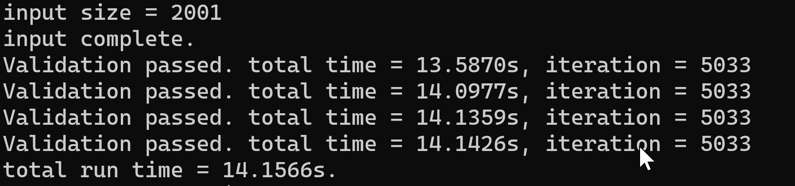
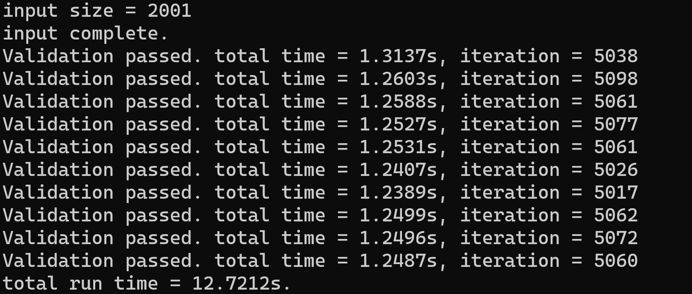
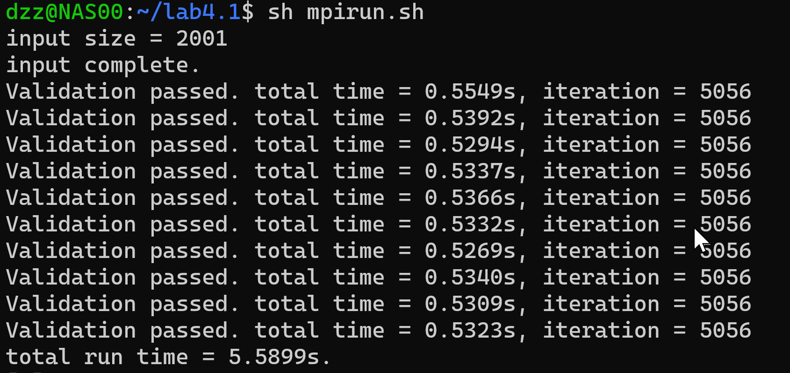
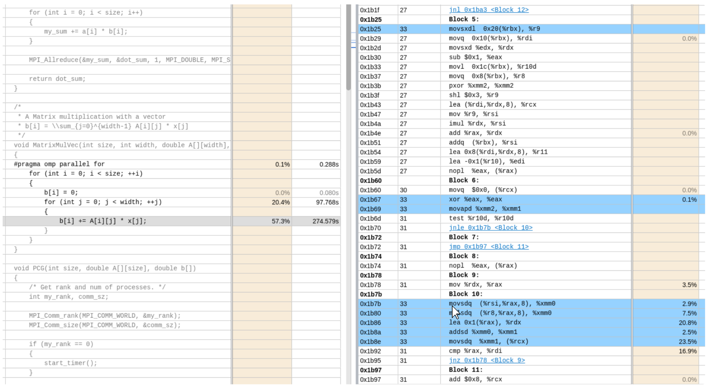
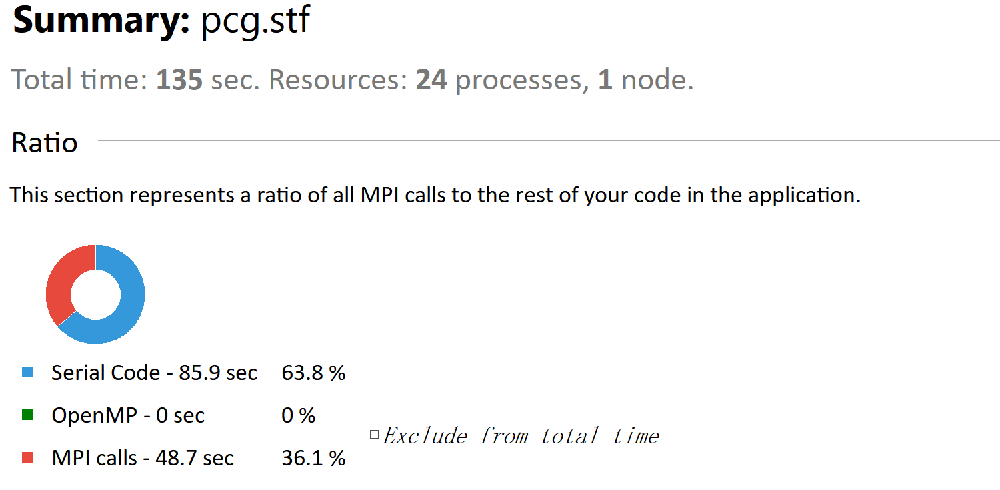
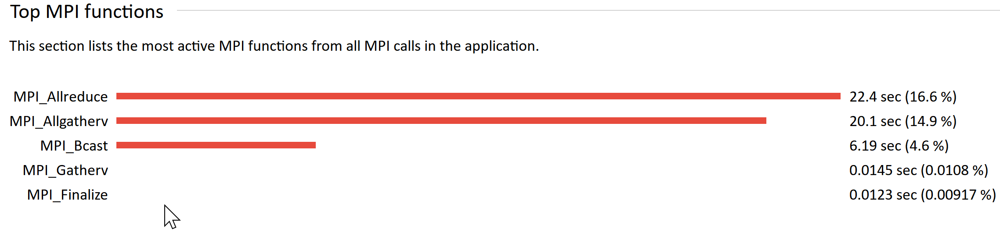

Lab-4 PCG算法在OMP和MPI下的优化
Lab Description
我们提供PCG代码的串行版本作为基准代码。在这个代码框架中有一部分代码不允许修改，见代码的README文件（如果你认为代码框架有不足之处，或是有其他值得修改的地方，欢迎向我们提出意见）。由于迭代算法的时间稳定性较差，main.c将在同样一组输入上重复运行pcg代码10次，总时间作为在该组输入上的评测标准。
代码在测试时将测试4组固定的输入，其中三组公布于基准代码中，相对应的矩阵�规模分别为2001x2001、4001x4001、6001x6001，最后一组输入不公布。PCG算法通常用于求解大规模的稀疏矩阵，稀疏矩阵上可以采取特殊的存储方式来节省空间和加速计算。为了代码简单，我们不考虑针对稀疏矩阵进行的优化，给出的输入数据都是稠密矩阵。
此外，你还需要在代码上进行Profile。依据Profile结果，你至少需要得到
- 耗时最多的三个MPI函数；
- 程序在MPI上消耗的总时间。
Profiler还会提供更多其他的信息。如果你能够获得并解释其他Profile获得的数据和图表，或者能够根据Profile的结果对程序进行有效的优化，将能够在Profile部分获得更好的分数。
Introduction Knowledge(可以跳过不看)
PCG（英语：preconditioned conjugate gradient，预处理共轭梯度算法）是一种利用多次迭代对方程组进行求解的方法。相比于使用直接法求解方程组，其对于存储空间的要求不高且扩展性良好，在涉及方程组求解的科学计算应用中具有一定的优势。大规模方程组求解在高性能计算机上进行计算时，使用直接法往往会因为程序的崩溃而导致之前的计算成为无效计算。再次进行计算时，之前已经计算过的部分要进行重新计算，浪费了大量的时间与计算资源，使用PCG算法能够有效地解决这一问题。
MPI的使用方法可以参见我的AIPP笔记
OpenMP 的使用相对简单，可以去看xg的笔记
Lab Design & Test Result
OMP
由于最初对mpi使用还不够熟悉，我先考虑使用OpenMP进行优化。经过测试发现，如果在PCG()函数运行的for循环外套用OpenMP，则可以充分利用了单节点多核心的优势，将时间直接缩短10倍左右。
# pragma omp parallel for
for (int i = 0; i < 10; ++i) {
PCG(size, A, b);
}
使用srun -N 4 -n 4 --cpu-bind=cores --cpus-per-task=24 ./pcg input_1.bin
此外值得一提的是，并不是对有循环的部分使用OpenMP都可以加速，这里值得思考。

MPI
PCG 算法的主要迭代过程仅涉及矩阵向量乘法、向量内积以及向量的数量积，均为典型的 embarrassingly parallel 情形，因此可轻松利用 MPI 优化程序。（此外，MPI的代码无法套用OMP中对PCG函数的并行！）
起先由于OpenMP的优化思路，由于void MatrixMulVec （）计算为$O(n^2)$级别的，所以只想用MPI对这个函数进行优化，可操作后发现这样是不可行的，具体的原因仍然未知(后来发现由于线程块大小不一定，故应当使用MPI_GatherV函数而不是MPI_ALLGather函数。
因此我在ddl的两天前开始重新更换思路，直接对整个PCG函数进行MPI并行操作。

再通过printf知道了中间出现了NA的情况，是由于MatrixMulVec函数的写法出现了问题，仍然归咎到MPIGatherV上面。（但这里仍有迷惑的点是如果我环境三个都加载那么不能跑通，但如果我只启用OpenMP则都可以跑通）
思路既是对所有矩阵进行拆分，利用通信的优势并行计算。
后来经过自己的努力尝试，发现可以正常计算但结果有误，原因是？一模一样的代码昨天跑通几天跑不通真的很奇怪
代码如下：
#include "judge.h"
double dot(double a[], double b[], int size) {
double dot_sum = 0;
double local_dot_sum = 0;
#pragma omp parallel for reduction(+:local_dot_sum)
for (int i = 0; i < size; ++i) {
local_dot_sum += a[i] * b[i];
}
MPI_Allreduce(&local_dot_sum, &dot_sum, 1, MPI_DOUBLE, MPI_SUM, MPI_COMM_WORLD);
return dot_sum;
}
void MatrixMulVec(int size, double A[][size], double x[], double b[], int start, int end) {
#pragma omp parallel for
for (int i = start; i < end; ++i) {
double temp = 0;
for (int j = 0; j < size; ++j) {
temp += A[i][j] * x[j];
}
#pragma omp critical
{
b[i - start] = temp;
}
}
}
void PCG(int size, double A[][size], double b[]) {
int rank, num_procs;
MPI_Comm_rank(MPI_COMM_WORLD, &rank);
MPI_Comm_size(MPI_COMM_WORLD, &num_procs);
MPI_Bcast(A, size * size, MPI_DOUBLE, 0, MPI_COMM_WORLD);
MPI_Bcast(b, size, MPI_DOUBLE, 0, MPI_COMM_WORLD);
if (rank == 0) {
start_timer();
}
int chunk_size = size / num_procs;
int remainder = size % num_procs;
int start = rank * chunk_size;
int end = start + chunk_size;
if (rank == num_procs - 1) {
end += remainder;
}
int counts = end - start;
double r[counts], x[counts], z[counts], p[counts];
double alpha, beta, gamma, r_dot_z, A_dot_p[counts];
/* initialization */
// #pragma omp parallel for
for (int i = start; i < end; ++i){
x[i - start] = 0;
r[i - start] = b[i];
z[i - start] = r[i - start] / A[i][i];
p[i - start] = z[i - start];
}
/* solve */
int iter = 0;
double loss = 0;
int quit = 1;
r_dot_z = dot(r, z, counts);
double* local_x = (double*)malloc(size * sizeof(double));
double* local_p = (double*)malloc(size * sizeof(double));
int* recvcounts = (int*)malloc(num_procs * sizeof(int));
int* displs = (int*)malloc(num_procs * sizeof(int));
if (local_x == NULL || local_p == NULL) {
fprintf(stderr, "Failed to allocate memory for local memory\n");
exit(1);
}
MPI_Allgather(&counts, 1, MPI_INT, recvcounts, 1, MPI_INT, MPI_COMM_WORLD);
displs[0] = 0;
for (int i = 1; i < num_procs; i++) {
displs[i] = displs[i-1] + recvcounts[i-1];
}
do {
/* A * p_k */
MPI_Allgatherv(p, counts, MPI_DOUBLE, local_p, recvcounts, displs, MPI_DOUBLE, MPI_COMM_WORLD);
MatrixMulVec(size, A, local_p, A_dot_p, start, end);
/* alpha */
alpha = r_dot_z / dot(p, A_dot_p, counts);
/* x */
#pragma omp parallel for
for (int i = 0; i < counts; ++i) {
x[i] += alpha * p[i];
}
/* r & loss */
double my_loss = 0.0;
// #pragma omp parallel for reduction(+:loss)
for (int i = 0; i < counts; ++i) {
r[i] = r[i] - alpha * A_dot_p[i];
if (r[i]) quit = 0;
my_loss += fabs(r[i]);
}
if (quit) break;
MPI_Allreduce(&my_loss, &loss, 1, MPI_DOUBLE, MPI_SUM, MPI_COMM_WORLD);
/* z */
// #pragma omp parallel for
for (int i = start; i < end; ++i) {
z[i - start] = r[i - start] / A[i][i];
}
/* beta */
double temp = dot(z, r, counts);
beta = temp / r_dot_z;
r_dot_z = temp;
/* p */
// #pragma omp simd
for (int i = 0; i < counts; ++i) {
p[i] = z[i] + beta * p[i];
}
}
while (++iter < MAXITER && loss > EPI);
MPI_Gatherv(x, counts, MPI_DOUBLE, local_x, recvcounts, displs, MPI_DOUBLE, 0, MPI_COMM_WORLD);
if (rank == 0) {
check(size, A, local_x, b, iter);
}
free(local_x);
free(local_p);
free(recvcounts);
free(displs);
}
OpenMPI实验结果：

IntelMPI实验结果：

ps：input_2大概是30多s，input_3是180多s。
SIMD和循环展开
通过网站观察汇编后我们发现,当我们启用O3编译编译器会帮我们自动向量化和循环展开。故不再次优化。

Profile
这个板块建议下载成本地的分析软件，非常便捷的就能完成分析。
Intel trace analyzer

程序在MPI中总耗时48.7s。
我们可以观察到，在我的程序版本中，MPI Calls的时间还是过长了，具体分析后得到具体数据：

耗时最长的三个函数是：MPI_Allreduce MPI_Allgatherv MPI_Bcast
由此我们看到，在我的代码中，Allreduce所占用的时间太多。分析来看主要是在做dot运算时我会让不同的节点去做不同向量片段的计算后reduce。经过之后的计算分析，很可能使用Allreduce的代价会大于其带给我们的好处。
此外AllGatherv的开销是令我没有想到的，在这里主要的代价在于A_dot_p所使用的分块计算的集合，我认为此处的时间损失完全可以从代码设计上所避免，但由于假期内并没太合理安排自己的时间导致所剩时间较少，无法在这个方面进行进一步的优化了。
Vtune
使用Vtune我们可以观察程序中的一些汇编代码以及函数执行的时机。我们发现在我的程序中设计的并行性较高，但MPI函数的时间损失还是过多了。
Bonus
关于bonus的Fortran部分，由于时间原因加上个人安排。自己没有太多时间完整学习Fortran语言，也不想chatgpt随便更改，故再没完成。
Discussion
通过本次实验，自己完整编写了MPI的程序，熟悉了分布式编程的特性以及debug的方法，了解了不同MPI编译器之间的差异。
与此同时，自己学习了intelMPI profile中所使用到的一些工具以及方法，从而更加熟练的编写与改进程序。也给自己对HPC有了更深的了解。